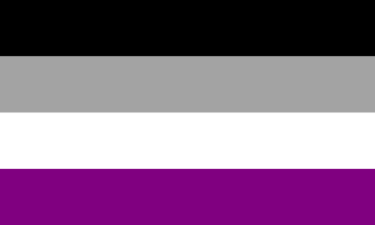

Welcome to the History Page!
Club History
to Gender Sexuality Alliance because it seemed more inclusive. We screened the movie
Love, Simon to celebrate the name change.
LGBTQ+ Pride Flag Histories

The rainbow flag is a symbol for the LGBTQ+ community. The original rainbow flag from 1978 had
8 colors. Hot pink represented sexuality, red represented life, orange represented healing, yellow
represented sunlight, green represented nature, turquoise represented art/magic, indigo represented
serenity, and violet represented spirit.
In 2017, Philadelphia adopted a version of the rainbow flag that includes a black and brown stripe,
to highlight people of color in the LGBTQ+ community.

Transgender flag: created by American trans woman Monica Helms in 1999, and was first shown at
a pride parade in Phoenix, Arizona, U.S. in 2000. The flag represents the transgender
community and consists of five horizontal stripes: two light blue, two pink, and one white in
the center. The stripes at the top and bottom are light blue, the traditional color for baby boys.
The stripes next to them are pink, the traditional color for baby girls. The stripe in the middle
is white, for those who are transitioning or consider themselves having a neutral or undefined gender.

Nonbinary Pride Flag — Kye Rowan created the nonbinary pride flag, which has yellow, white, purple,
and black horizontal stripes, in 2014. It is intended to represent nonbinary people who did not feel
that the genderqueer flag represented them and be used alongside that design. The yellow stripe
represents people whose gender exists outside of the binary, the white stripe representing people
with many or all genders, the purple representing people with genders considered a mix of male and
female, and the black representing people who identify as not having a gender.

Asexual flag: The flag consists of four horizontal stripes: black, grey, white, and purple from top
to bottom. The black stripe represents asexuality, the grey stripe representing the grey-area between
sexual and asexual, the white stripe representing sexuality, and the purple stripe representing community.

Genderqueer flag: lavender represents androgyny, white represents the agender identity and green
represents identities outside of the gender binary.